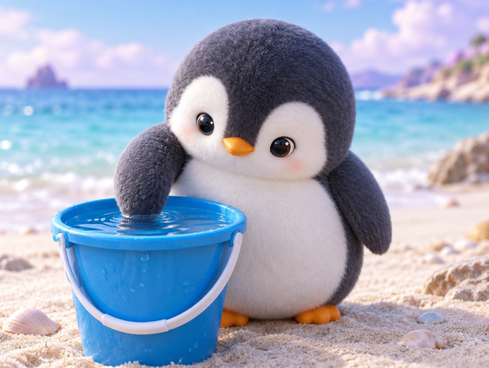

📝 DRAFT · 下書き — まだ本番に出していません · 下書き一覧
🐧 EVERYDAY LIFE⚡ 21 SEC
Do small scary things many times, and your brain learns they are safe 🌊

The Sea Hare
A sea animal called a sea hare pulls in its body when you poke it.
Again and Again
But they say if you poke it again and again, it slowly stops doing that.
This is because it learns, "This is not dangerous."
⚡ TRY IT
Poke the sea hare 8 times
Hello. I am a sea hare. Poke me!
Eek! Danger!
Hmm… again?
Oh, it is just you.
Zzz… this is safe.
👉 0/8
Tap the sea hare. Watch the bars.
🧠 It learned: "This is safe." Your brain can learn the same about shame.
Same With Shame
Shame is the same: do a little scary thing many times, and your brain learns, "Shame is safe."
Try This
For example, try asking someone the way.
📚 I learned this from the Japanese blog "Panda no Ondo".